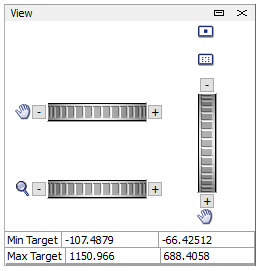

视图操作
由于挤出窗格两种视图中呈现的信息都是二维的，该窗格仅使用 FLAC3D 中可用视图操作工具的一个子集。视图操作可通过控制面板中的视图控件组进行，也可直接用鼠标在当前视图上进行。
控制面板中的视图控件组

图 1：挤出窗格中显示的视图控件组
该控件组提供以下控件：用于垂直和水平平移的旋钮（）、用于增大/减小放大倍数的旋钮（）、重置视图按钮（）以及缩放至选择集按钮（）。此外，控件组的下部显示“最小目标”和“最大目标”。“最小目标”分别设置模型视图范围的左侧和下侧位置；“最大目标”分别设置模型视图范围的右侧和上侧位置（均采用模型坐标）。所显示的数值可编辑；在其中一个区域输入新值后，一旦执行任何使编辑字段失去焦点的操作即会应用该值。
鼠标与键盘视图控制
使用鼠标滚轮增大（向上滚）和减小（向下滚）视图的放大倍数。
由于交互式对象工具（点-边（ ）、控制点（）和块体划分（
）、控制点（）和块体划分（ ））将选择功能赋予鼠标右键（详见 其他鼠标模式下的鼠标右键（Right Mouse Button in Other Mouse Modes）），因此在这些工具处于活动状态时，平移需要按住 Shift 键并在视图上右键拖动。当选择工具（
））将选择功能赋予鼠标右键（详见 其他鼠标模式下的鼠标右键（Right Mouse Button in Other Mouse Modes）），因此在这些工具处于活动状态时，平移需要按住 Shift 键并在视图上右键拖动。当选择工具（ ）为活动工具时，只需在视图上右键拖动即可沿鼠标移动方向平移。
）为活动工具时，只需在视图上右键拖动即可沿鼠标移动方向平移。
| 这些内容对您有帮助吗？… | FLAC3D © 2019, Itasca | 原文更新于 2020 年 10 月 8 日 |
| 版权与免责声明 | ||